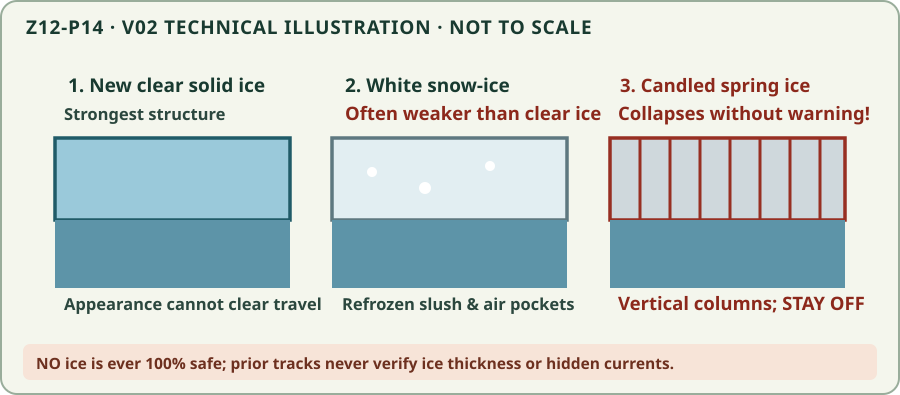

Z12-P14 · Extreme environments · Adapted historical material
Distinguish clear solid new ice, white snow-ice and rotten honeycomb ice
Recognize visual structural cues of weaker ice types while remembering that clear-looking ice can still be dangerously thin.
When it applies · Shoreline visual screening of frozen lakes and ponds during early freeze, mid-winter and spring thaw.
Equipment · Shoreline vantage point (never step onto suspect ice to inspect it).

Actions
- Distinguish three general ice classes from solid shore: clear blue-black new ice (denser when thick and solid), opaque white snow-ice (formed from frozen slush/wet snow with trapped air—roughly half as strong), and dark mottled/vertical-candled spring ice (rotten honeycomb that collapses suddenly).[X01, E12]
- Recognize that gray, dark wet-looking, slush-covered or candled spring ice loses structural cohesion rapidly during sunny above-freezing afternoons even if overnight air dips below freezing.[X01, E12]
- Never equate clear glossy appearance with adequate thickness—fresh crystal-clear ice may be less than one inch thick and break instantly.[X01, E12]
Failure recognition · Stepping onto thick-looking gray spring ice during a warm March afternoon because cars drove on the same lake two weeks earlier.[X01, E12]
Verify · Observe ice structure strictly from dry shore and verify zero reliance on visual appearance alone to authorize crossing.[X01, E12, ED]
Stop or change course · Mottled gray ice, shoreline melt moats, standing surface water or thaw-week candling are absolute stop boundaries—stay on land.[X01, E12]
Evidence and editorial notes
- E12 · Minnesota DNR · Ice Safety (current web edition)
- Section: Ice Safety > basic precautions · Conditions: Minnesota ice edges and travel routes
Support: No ice is universally safe. Strength can differ over short distances; appearance or tracks alone cannot establish a safe crossing.
Limitations: Currents, springs, snow insulation, and freeze-thaw cycles weaken ice invisibly. · Conflicting evidence: None; mandates shore-bound detour for foundational walking parties.
Editorial note: Maintains strict separation from specialized B013 ice chapters. · Specialist reviewer: Ice safety and search and rescue
Primary source · checked 2026-11-24 - X01 · Minnesota DNR · General Ice Thickness Guidelines (current web edition)
- Section: General Ice Thickness Guidelines > New Clear Ice Only · Conditions: Minnesota lakes and ponds during stable winter freezing
Support: Agency thickness guidelines apply ONLY to new, clear solid ice and are NEVER a guarantee of safety; white snow-ice is roughly half as strong, and currents, springs, inlets, outlets and snow cover create hidden thin zones.
Limitations: No ice is 100% safe; one drilled thickness check does not clear an entire crossing route. · Conflicting evidence: Directly reconciles B013 P01–P05, P11 and P17 with MN DNR warnings.
Editorial note: Enforces non-guarantee ice boundaries across Z12. · Specialist reviewer: Ice safety and winter search and rescue
Primary source · checked 2026-11-24
Source lineage · B013-P02/P09 ice types and MN DNR; adapted historical material · Classification · Adapted historical material.